set_seed(42)
plt.style.use("ggplot")Optimizers and Schedulers
In this module, we reimplement gradient descent and its variants and explore learning rate scheduling. We discuss the relationship between learning rate scheduling and intialization.
Adapted from:
train
train (model, lr, n_epochs=3, bs=512, opt_func=<class 'torch.optim.sgd.SGD'>, cbs=())
Train a Fashion MNIST model
This was the best model from the previous notebook at 88% accuracy. We’re going to make this better!
def get_kaiming_initalized_model(leak=0.1):
model = CNNWithGeneralReLUAndBatchNorm(gr=partial(GeneralReLU, leak=leak))
model.apply(partial(init_leaky_weights, leak=leak))
return modelmodel = get_kaiming_initalized_model()
train(model, lr=0.2, n_epochs=3, cbs=[MomentumCB()])
train(model, lr=0.05, n_epochs=2, cbs=[MomentumCB()])| MulticlassAccuracy | loss | epoch | train |
|---|---|---|---|
| 0.791 | 0.578 | 0 | train |
| 0.807 | 0.531 | 0 | eval |
| 0.855 | 0.395 | 1 | train |
| 0.835 | 0.460 | 1 | eval |
| 0.868 | 0.357 | 2 | train |
| 0.841 | 0.443 | 2 | eval |
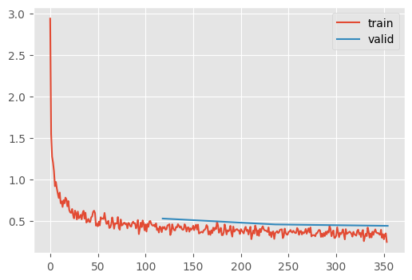
| MulticlassAccuracy | loss | epoch | train |
|---|---|---|---|
| 0.883 | 0.321 | 0 | train |
| 0.868 | 0.358 | 0 | eval |
| 0.886 | 0.314 | 1 | train |
| 0.869 | 0.355 | 1 | eval |
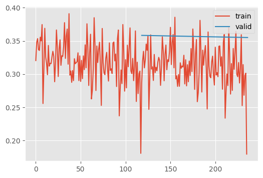
Implementing Stochastic Gradient Descent
Let’s start to implement our own optimizer class. Remember, the learner class interfaces with the optimizer solely through the constructor and the step function.
@with_cbs("batch")
def _one_batch(self):
self.predict()
self.callback("after_predict")
self.get_loss()
self.callback("after_loss")
if self.training:
self.backward()
self.callback("after_backward")
self.step() # 👈
self.callback("after_step")
self.zero_grad()
# ...
def fit(self, n_epochs=1, train=True, valid=True, cbs=None, lr=None):
with tempfile.TemporaryDirectory() as tdir:
self.dls.tdir = tdir
cbs = fc.L(cbs)
# `add_cb` and `rm_cb` were added in lesson 18
for cb in cbs:
self.cbs.append(cb)
try:
self.n_epochs = n_epochs
self.epochs = range(n_epochs)
if lr is None:
lr = self.lr
if self.opt_func:
self.opt = self.opt_func(self.model.parameters(), lr) # 👈
self._fit(train, valid)
finally:
for cb in cbs:
self.cbs.remove(cb)Therefore, we only need to implement those two interfaces. Let’s also add (and discuss) weight decay.
class SGD:
def __init__(self, params, lr, wd=0):
params = list(params)
fc.store_attr()
self.i = 0
def step(self):
with torch.no_grad():
for p in self.params:
self.reg_step(p)
self.opt_step(p)
self.i += 1
def opt_step(self, p):
p -= p.grad * self.lr
def reg_step(self, p):
if self.wd != 0:
p *= 1 - self.lr * self.wd
def zero_grad(self):
for p in self.params:
p.grad.data.zero_()Weight Decay Regularization
We’ve added weight decay regularization here.
Suppose we want to apply a loss on the weights themselves as a regularization? (Where \(k\) is the weight decay parameter.) \[ L = loss(y) + loss(w) = loss(y) + \sum_{i=1}^d k (w_{i})^2 \]
We need the derivative to compute the backwards gradient.
\[ \frac{\partial L}{\partial w} = \frac{\partial loss(y)}{\partial w} + \sum_{i=1}^d 2k (w_{i}) \]
Let’s assume that torch has already computed \(\frac{\partial loss(y)}{\partial w}\). Then, we could do:
weight.grad += wd * weightOf course, we are about that perform opt_step anyways, which subtracts lr * weight.grad from the parameters. Therefore,
p *= 1 - self.lr * self.wdis equivalent.
Momentum
We already have MomentumCB, but its hacky. This really deserves to be its own class.
Let’s get a sense of the parameters of momentum.
xs = torch.linspace(-4, 4, 100)
ys = 1 - (xs / 3) ** 2 + torch.randn(100) * 0.1fig, axs = plt.subplots(2, 2, figsize=(6, 3))
betas = [0.5, 0.7, 0.9, 0.99]
for beta, ax in zip(betas, axs.flatten()):
ax.scatter(xs, ys)
avg, res = 0, []
for yi in ys:
avg = beta * avg + (1 - beta) * yi
res.append(avg)
ax.plot(xs, np.array(res), color="purple")
ax.set_title(f"beta={beta}")
fig.tight_layout()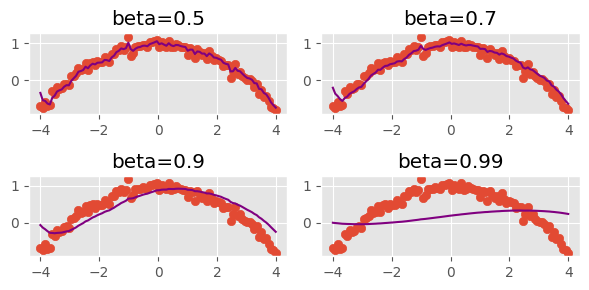
This demonstrates how momentum can smooth out the loss surface.
class MomentumSGD(SGD):
def __init__(self, params, lr, wd=0, mom=0.9):
super().__init__(params, lr, wd)
self.mom = mom
def opt_step(self, p):
grad_avg = getattr(p, "grad_avg", torch.zeros_like(p.grad))
# This is slight more sophisticated than the MomentumCB because
# it wasn't apropriately weighting the existing gradients
p.grad_avg = grad_avg * self.mom + p.grad * (1 - self.mom)
p -= p.grad_avg * self.lrLet’s try this on FashionMNIST
train(
get_kaiming_initalized_model(),
lr=1.25, # 👈 learning rate can be WAY up here
opt_func=MomentumSGD,
)| MulticlassAccuracy | loss | epoch | train |
|---|---|---|---|
| 0.803 | 0.549 | 0 | train |
| 0.590 | 1.788 | 0 | eval |
| 0.857 | 0.395 | 1 | train |
| 0.851 | 0.411 | 1 | eval |
| 0.880 | 0.325 | 2 | train |
| 0.866 | 0.383 | 2 | eval |
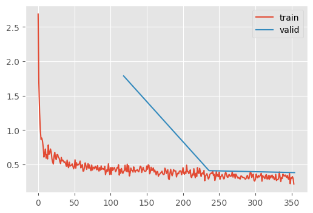
Tangent
Jeremy goes on a tangent here and discusses batch sizes. In theory, larger batch sizes represent a more accurate reprentation of the loss surface. But they also imply that there are fewer update steps, which is bad! Supposedly, Yan LeCunn (originally) thought that the ideal batch size is one, whereas the norm these days is to have a batch size of millions.
RMSProp
Momentum can be “aggressive” for some finicky architectures. RMSProp is a historically interesting architecture that can be used instead. This was an optimization algorithm debuted in a Coursera by Hinton. It was never published.
The algorithm trains models by updating weights with the gradient divided by an exponentially weighted average of the square of the gradients. Large squared gradients imply large variances, so this ensure gives each parameter a chance to shine 🌟 In other words, this allows the network to take larger steps in directions where gradients are consistently small, and smaller steps in directions where gradients are fluctuating or large.
class RMSProp(SGD):
def __init__(self, params, lr, wd=0.0, sqr_mom=0.99, eps=1e-5):
super().__init__(params, lr=lr, wd=wd)
self.sqr_mom, self.eps = sqr_mom, eps
def opt_step(self, p):
# Note that Jeremy initializes the squared average as that of the current
# gradient, instead of 0. Otherwise, p.sqr_avg.sqrt() + self.eps is a
# very large value and the initial learning rate is very high
sqr_avg = getattr(p, "sqr_avg", p.grad**2)
# vvvvvvvvv
p.sqr_avg = sqr_avg * self.sqr_mom + p.grad**2 * (1 - self.sqr_mom)
p -= self.lr * p.grad / (p.sqr_avg.sqrt() + self.eps)How does this do on FashionMNIST?
train(get_kaiming_initalized_model(), lr=1e-2, opt_func=RMSProp)| MulticlassAccuracy | loss | epoch | train |
|---|---|---|---|
| 0.780 | 0.635 | 0 | train |
| 0.814 | 0.536 | 0 | eval |
| 0.855 | 0.387 | 1 | train |
| 0.827 | 0.513 | 1 | eval |
| 0.869 | 0.348 | 2 | train |
| 0.822 | 0.521 | 2 | eval |
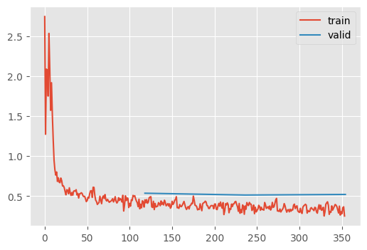
Honestly, not that good in practice – at least on its own. That’s why we usually see:
Adam
RMSProp and momentum are usually seen together in the Adam optimizer.
Keep in mind that \(\beta\) terms beta1 and beta2 are just momentum and squared momentum!
class Adam(SGD):
def __init__(self, params, lr, wd=0.0, beta1=0.9, beta2=0.99, eps=1e-5):
super().__init__(params, lr=lr, wd=wd)
self.beta1, self.beta2, self.eps = beta1, beta2, eps
def opt_step(self, p):
if not hasattr(p, "avg"):
p.avg = torch.zeros_like(p.grad.data)
if not hasattr(p, "sqr_avg"):
p.sqr_avg = torch.zeros_like(p.grad.data)
p.avg = self.beta1 * p.avg + (1 - self.beta1) * p.grad
# For the first minibatch, the momentum is 0, so the gradient
# should be quite small. However, we know this is the case and
# we can adjust for it because we know how far from 0 it should
# be -- i.e., $(beta_1)^2$. Therefore, we can divide by 1 minus
# this term to increase the average. Note that as i increases,
# the unbiased avg approaches the original avg
unbias_avg = p.avg / (1 - (self.beta1 ** (self.i + 1)))
p.sqr_avg = self.beta2 * p.sqr_avg + (1 - self.beta2) * (p.grad**2)
# Same idea as above
unbias_sqr_avg = p.sqr_avg / (1 - (self.beta2 ** (self.i + 1)))
# Finally, we perform the learning rate modulation for momentum and
# RMSProp
p -= self.lr * unbias_avg / (unbias_sqr_avg + self.eps).sqrt()train(get_kaiming_initalized_model(), lr=1e-2, opt_func=Adam)| MulticlassAccuracy | loss | epoch | train |
|---|---|---|---|
| 0.824 | 0.490 | 0 | train |
| 0.852 | 0.430 | 0 | eval |
| 0.874 | 0.346 | 1 | train |
| 0.867 | 0.386 | 1 | eval |
| 0.888 | 0.302 | 2 | train |
| 0.868 | 0.371 | 2 | eval |
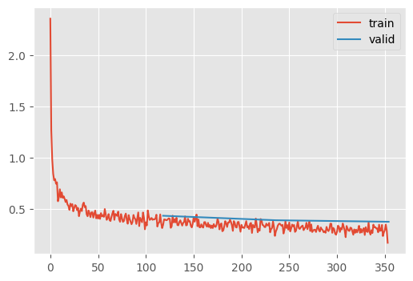
Schedulers
Decreasing the learning rate over time is thought to help with convergence by allowing the network to explore grooves in the loss surface.
Here are the built-in optimizers:
[m for m in dir(lr_scheduler) if m != "EPOCH_DEPRECATION_WARNING" and m[0].isupper()]['ChainedScheduler',
'ConstantLR',
'CosineAnnealingLR',
'CosineAnnealingWarmRestarts',
'Counter',
'CyclicLR',
'ExponentialLR',
'LRScheduler',
'LambdaLR',
'LinearLR',
'MultiStepLR',
'MultiplicativeLR',
'OneCycleLR',
'Optimizer',
'PolynomialLR',
'ReduceLROnPlateau',
'SequentialLR',
'StepLR']We’ll need to tweak the Learner API to incorporate schedulers.
opt = torch.optim.SGD(model.parameters(), lr=1e-1)
param = next(iter(model.parameters()))
st = opt.state[param]
st{}PyTorch stores parameter state in the optimizer, similarly to how we stored state directly in the tensors.
grad_avg = getattr(p, "grad_avg", torch.zeros_like(p.grad))
p.grad_avg = grad_avg * self.mom + p.grad * (1 - self.mom)
p -= p.grad_avg * self.lrWe can also group state in “parameter groups”
optSGD (
Parameter Group 0
dampening: 0
differentiable: False
foreach: None
lr: 0.1
maximize: False
momentum: 0
nesterov: False
weight_decay: 0
)opt.param_groups[0].keys()dict_keys(['params', 'lr', 'momentum', 'dampening', 'weight_decay', 'nesterov', 'maximize', 'foreach', 'differentiable'])We can configure out learning rate scheduler like so
lr_scheduler.CosineAnnealingLR?Init signature: lr_scheduler.CosineAnnealingLR( optimizer, T_max, eta_min=0, last_epoch=-1, verbose=False, ) Docstring: Set the learning rate of each parameter group using a cosine annealing schedule, where :math:`\eta_{max}` is set to the initial lr and :math:`T_{cur}` is the number of epochs since the last restart in SGDR: .. math:: \begin{aligned} \eta_t & = \eta_{min} + \frac{1}{2}(\eta_{max} - \eta_{min})\left(1 + \cos\left(\frac{T_{cur}}{T_{max}}\pi\right)\right), & T_{cur} \neq (2k+1)T_{max}; \\ \eta_{t+1} & = \eta_{t} + \frac{1}{2}(\eta_{max} - \eta_{min}) \left(1 - \cos\left(\frac{1}{T_{max}}\pi\right)\right), & T_{cur} = (2k+1)T_{max}. \end{aligned} When last_epoch=-1, sets initial lr as lr. Notice that because the schedule is defined recursively, the learning rate can be simultaneously modified outside this scheduler by other operators. If the learning rate is set solely by this scheduler, the learning rate at each step becomes: .. math:: \eta_t = \eta_{min} + \frac{1}{2}(\eta_{max} - \eta_{min})\left(1 + \cos\left(\frac{T_{cur}}{T_{max}}\pi\right)\right) It has been proposed in `SGDR: Stochastic Gradient Descent with Warm Restarts`_. Note that this only implements the cosine annealing part of SGDR, and not the restarts. Args: optimizer (Optimizer): Wrapped optimizer. T_max (int): Maximum number of iterations. eta_min (float): Minimum learning rate. Default: 0. last_epoch (int): The index of last epoch. Default: -1. verbose (bool): If ``True``, prints a message to stdout for each update. Default: ``False``. .. _SGDR\: Stochastic Gradient Descent with Warm Restarts: https://arxiv.org/abs/1608.03983 File: ~/micromamba/envs/slowai/lib/python3.11/site-packages/torch/optim/lr_scheduler.py Type: type Subclasses:
n_batches = 100
sched = lr_scheduler.CosineAnnealingLR(opt, n_batches)def plot_scheduler(sched, n_steps):
fig, ax = plt.subplots()
lrs = []
lrs.append(sched.get_last_lr())
for _ in range(n_batches):
sched.optimizer.step()
sched.step()
lrs.append(sched.get_last_lr())
ax.plot(lrs)
ax.set(xlabel="Time", ylabel="LR");plot_scheduler(sched, n_steps=n_batches)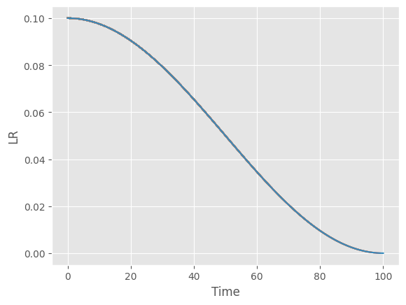
Let’s write this as a callback
BaseSchedulerCB
BaseSchedulerCB (scheduler_f, **kwargs)
Base callback class for schedulers
BatchSchedulerCB
BatchSchedulerCB (scheduler_f, **kwargs)
Step the scheduler every batch
RecorderCB
RecorderCB (**d)
Record internal state values at each batch.
n_epochs = 3
dls = fashion_mnist(512)
T_max = len(dls["train"]) * n_epochs
scheduler = BatchSchedulerCB(lr_scheduler.CosineAnnealingLR, T_max=T_max)
recorder = RecorderCB(lr=g("pg.lr"))
train(
get_kaiming_initalized_model(),
1e-2,
n_epochs,
opt_func=torch.optim.Adam,
cbs=[scheduler, recorder],
)| MulticlassAccuracy | loss | epoch | train |
|---|---|---|---|
| 0.822 | 0.493 | 0 | train |
| 0.843 | 0.430 | 0 | eval |
| 0.878 | 0.332 | 1 | train |
| 0.868 | 0.359 | 1 | eval |
| 0.896 | 0.283 | 2 | train |
| 0.877 | 0.335 | 2 | eval |
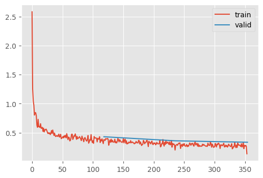
recorder.plot()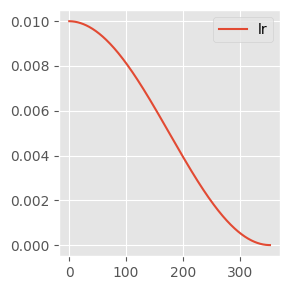
Another trick to improve training dynamics is to start with a warmup, as in the 1cycle policy. This is because high learning rate in the initial phase of poorly initialized models can lead to the dead units issue explored earlier.
lr_scheduler.OneCycleLR?Init signature: lr_scheduler.OneCycleLR( optimizer, max_lr, total_steps=None, epochs=None, steps_per_epoch=None, pct_start=0.3, anneal_strategy='cos', cycle_momentum=True, base_momentum=0.85, max_momentum=0.95, div_factor=25.0, final_div_factor=10000.0, three_phase=False, last_epoch=-1, verbose=False, ) Docstring: Sets the learning rate of each parameter group according to the 1cycle learning rate policy. The 1cycle policy anneals the learning rate from an initial learning rate to some maximum learning rate and then from that maximum learning rate to some minimum learning rate much lower than the initial learning rate. This policy was initially described in the paper `Super-Convergence: Very Fast Training of Neural Networks Using Large Learning Rates`_. The 1cycle learning rate policy changes the learning rate after every batch. `step` should be called after a batch has been used for training. This scheduler is not chainable. Note also that the total number of steps in the cycle can be determined in one of two ways (listed in order of precedence): #. A value for total_steps is explicitly provided. #. A number of epochs (epochs) and a number of steps per epoch (steps_per_epoch) are provided. In this case, the number of total steps is inferred by total_steps = epochs * steps_per_epoch You must either provide a value for total_steps or provide a value for both epochs and steps_per_epoch. The default behaviour of this scheduler follows the fastai implementation of 1cycle, which claims that "unpublished work has shown even better results by using only two phases". To mimic the behaviour of the original paper instead, set ``three_phase=True``. Args: optimizer (Optimizer): Wrapped optimizer. max_lr (float or list): Upper learning rate boundaries in the cycle for each parameter group. total_steps (int): The total number of steps in the cycle. Note that if a value is not provided here, then it must be inferred by providing a value for epochs and steps_per_epoch. Default: None epochs (int): The number of epochs to train for. This is used along with steps_per_epoch in order to infer the total number of steps in the cycle if a value for total_steps is not provided. Default: None steps_per_epoch (int): The number of steps per epoch to train for. This is used along with epochs in order to infer the total number of steps in the cycle if a value for total_steps is not provided. Default: None pct_start (float): The percentage of the cycle (in number of steps) spent increasing the learning rate. Default: 0.3 anneal_strategy (str): {'cos', 'linear'} Specifies the annealing strategy: "cos" for cosine annealing, "linear" for linear annealing. Default: 'cos' cycle_momentum (bool): If ``True``, momentum is cycled inversely to learning rate between 'base_momentum' and 'max_momentum'. Default: True base_momentum (float or list): Lower momentum boundaries in the cycle for each parameter group. Note that momentum is cycled inversely to learning rate; at the peak of a cycle, momentum is 'base_momentum' and learning rate is 'max_lr'. Default: 0.85 max_momentum (float or list): Upper momentum boundaries in the cycle for each parameter group. Functionally, it defines the cycle amplitude (max_momentum - base_momentum). Note that momentum is cycled inversely to learning rate; at the start of a cycle, momentum is 'max_momentum' and learning rate is 'base_lr' Default: 0.95 div_factor (float): Determines the initial learning rate via initial_lr = max_lr/div_factor Default: 25 final_div_factor (float): Determines the minimum learning rate via min_lr = initial_lr/final_div_factor Default: 1e4 three_phase (bool): If ``True``, use a third phase of the schedule to annihilate the learning rate according to 'final_div_factor' instead of modifying the second phase (the first two phases will be symmetrical about the step indicated by 'pct_start'). last_epoch (int): The index of the last batch. This parameter is used when resuming a training job. Since `step()` should be invoked after each batch instead of after each epoch, this number represents the total number of *batches* computed, not the total number of epochs computed. When last_epoch=-1, the schedule is started from the beginning. Default: -1 verbose (bool): If ``True``, prints a message to stdout for each update. Default: ``False``. Example: >>> # xdoctest: +SKIP >>> data_loader = torch.utils.data.DataLoader(...) >>> optimizer = torch.optim.SGD(model.parameters(), lr=0.1, momentum=0.9) >>> scheduler = torch.optim.lr_scheduler.OneCycleLR(optimizer, max_lr=0.01, steps_per_epoch=len(data_loader), epochs=10) >>> for epoch in range(10): >>> for batch in data_loader: >>> train_batch(...) >>> optimizer.step() >>> scheduler.step() .. _Super-Convergence\: Very Fast Training of Neural Networks Using Large Learning Rates: https://arxiv.org/abs/1708.07120 File: ~/micromamba/envs/slowai/lib/python3.11/site-packages/torch/optim/lr_scheduler.py Type: type Subclasses:
plot_scheduler(lr_scheduler.OneCycleLR(opt, max_lr=0.1, total_steps=100), 100)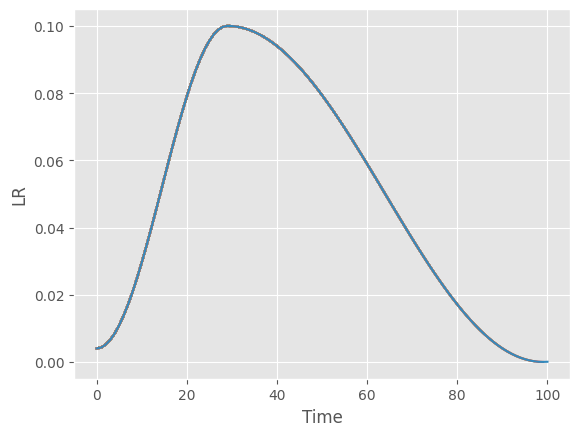
Ultimately, tricks like batch norm and OneCycle are unneccesary if the model is initialized apropriately. These papers are excellent guides to doing so:
Normalization layers are a staple in state-of-the-art deep neural network architectures. They are widely believed to stabilize training, enable higher learning rate, accelerate convergence and improve generalization, though the reason for their effectiveness is still an active research topic. In this work, we challenge the commonly-held beliefs by showing that none of the perceived benefits is unique to normalization. Specifically, we propose fixed-update initialization (Fixup), an initialization motivated by solving the exploding and vanishing gradient problem at the beginning of training via properly rescaling a standard initialization. We find training residual networks with Fixup to be as stable as training with normalization – even for networks with 10,000 layers. Furthermore, with proper regularization, Fixup enables residual networks without normalization to achieve state-of-the-art performance in image classification and machine translation.
- For Transformers: Improving Transformer Optimization Through Better Initialization
The Transformer architecture has achieved considerable success recently; the key component of the Transformer is the attention layer that enables the model to focus on important regions within an input sequence. Gradient optimization with attention layers can be notoriously difficult requiring tricks such as learning rate warmup to prevent divergence. As Transformer models are becoming larger and more expensive to train, re- cent research has focused on understanding and improving optimization in these architectures. In this work our contributions are two-fold: we first investigate and empirically validate the source of optimization problems in the encoder-decoder Transformer architecture; we then propose a new weight initialization scheme with theoretical justi- fication, that enables training without warmup or layer normalization. Empirical results on public machine translation benchmarks show that our approach achieves leading accuracy, allowing to train deep Transformer models with 200 layers in both encoder and decoder (over 1000 atten- tion/MLP blocks) without difficulty.
Warning
Over time, the community learn to initialize models correctly. It’s difficult! Most researchers don’t realize they don’t need batch norm or warmup if the initialization is correct. Don’t be like most researchers!
train_1cycle
train_1cycle (model, lr=0.01, n_epochs=3, extra_cbs=[])
recorder, _ = train_1cycle(get_kaiming_initalized_model())| MulticlassAccuracy | loss | epoch | train |
|---|---|---|---|
| 0.727 | 0.777 | 0 | train |
| 0.837 | 0.482 | 0 | eval |
| 0.870 | 0.357 | 1 | train |
| 0.868 | 0.361 | 1 | eval |
| 0.895 | 0.285 | 2 | train |
| 0.884 | 0.320 | 2 | eval |
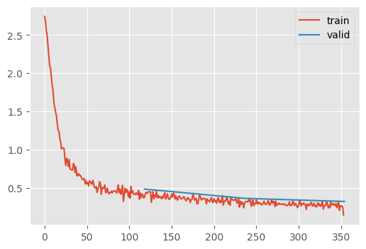
Notice that the learning rate schedule is negatively correlated to the momentum. The idea is that as the network approaches a stable training dynamic, the momentum is less neccesary.
recorder.plot()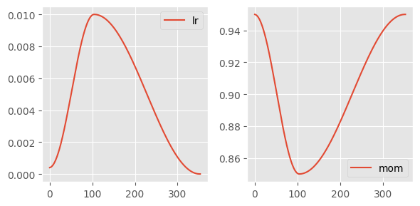
Achieving 90% accuracy
Let’s simply increase the maximum learning rate and the training duration with all the improvements we’ve explored in this notebook
train_1cycle(get_kaiming_initalized_model(), lr=5e-2, n_epochs=6);| MulticlassAccuracy | loss | epoch | train |
|---|---|---|---|
| 0.792 | 0.578 | 0 | train |
| 0.798 | 0.559 | 0 | eval |
| 0.843 | 0.428 | 1 | train |
| 0.831 | 0.479 | 1 | eval |
| 0.874 | 0.339 | 2 | train |
| 0.866 | 0.377 | 2 | eval |
| 0.893 | 0.288 | 3 | train |
| 0.883 | 0.328 | 3 | eval |
| 0.909 | 0.247 | 4 | train |
| 0.894 | 0.294 | 4 | eval |
| 0.922 | 0.211 | 5 | train |
| 0.899 | 0.276 | 5 | eval |
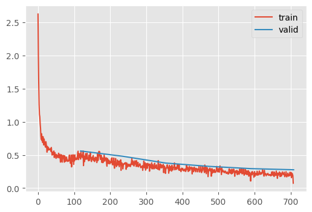
90% accuracy 🎉🎉🎉